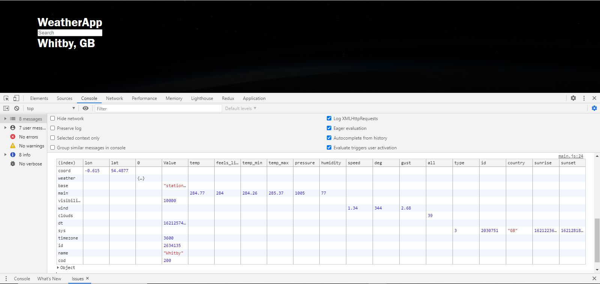

Day 24 gave me a chance to start using promises and async/await in a new project.
The next project on the docket is a simple weather app that pulls in data from the Open Weather API based on the city name provided in a searchbar. While not especially challenging at first glance, I am sure there will be several hurdles, especially when a user is in the process of typing out characters, but requests fire off after each keyup event.
I decided to go for a dark 'space' theme, and while styling won't be the highlight of my efforts here, I do plan to polish the app up overall.
Here is a snapshot of where the app is at so far:
